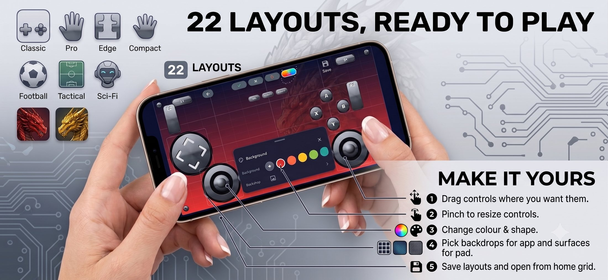
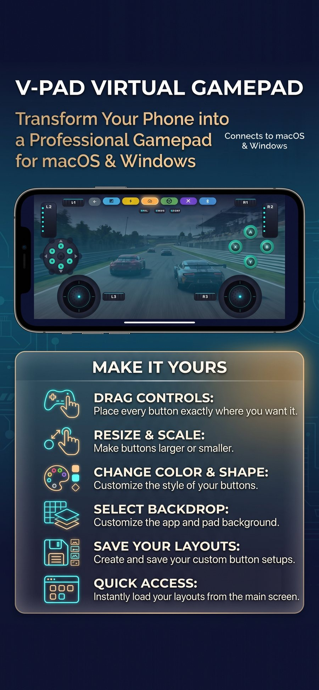
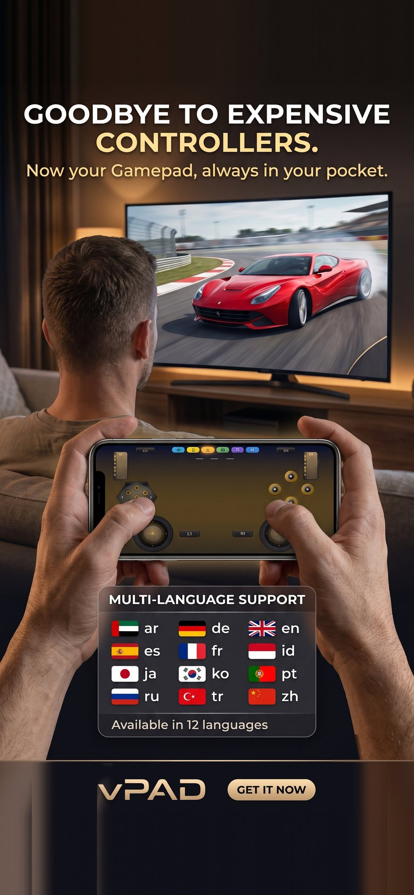
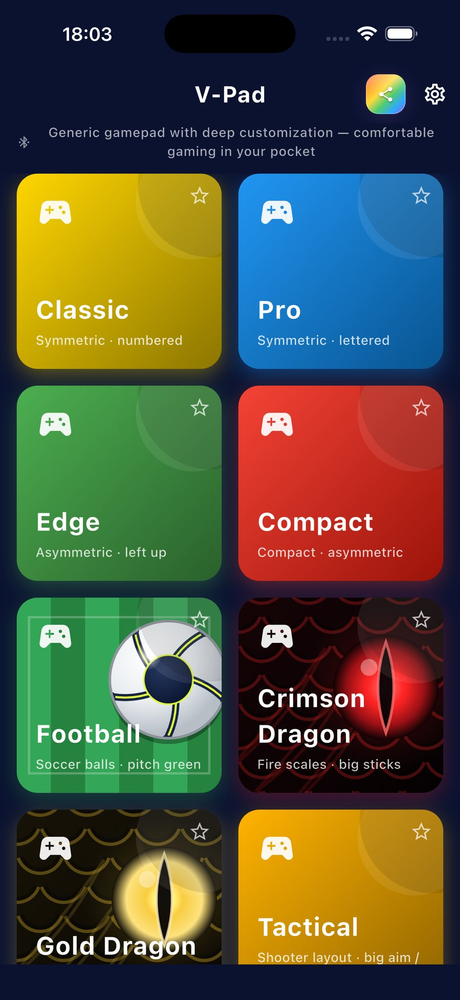
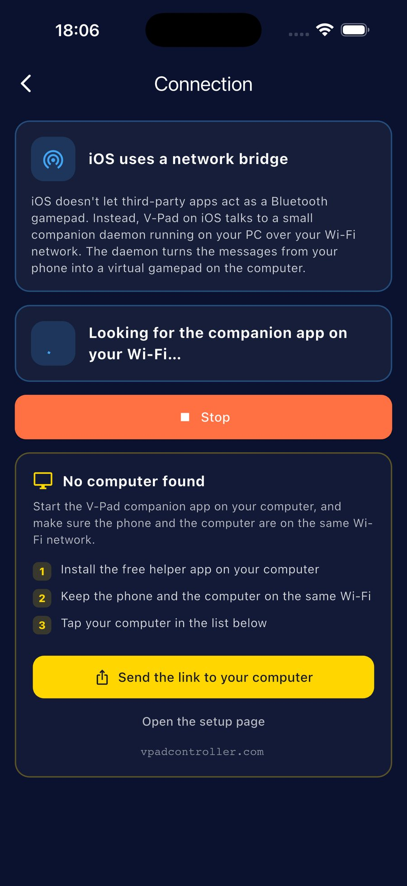
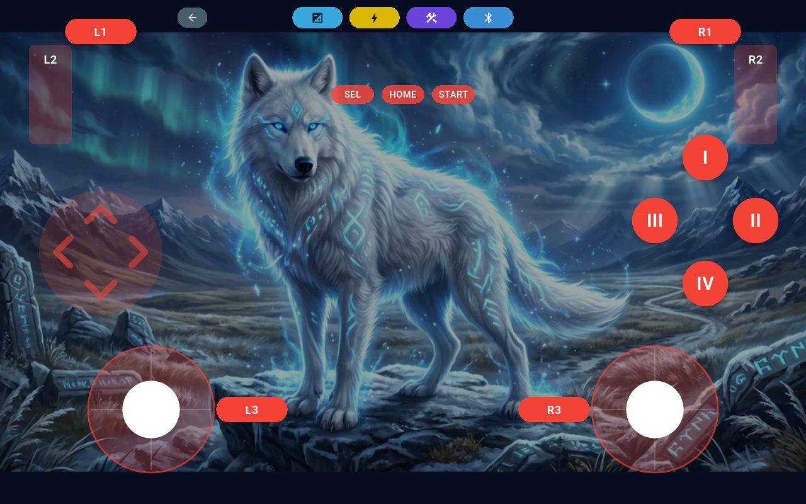
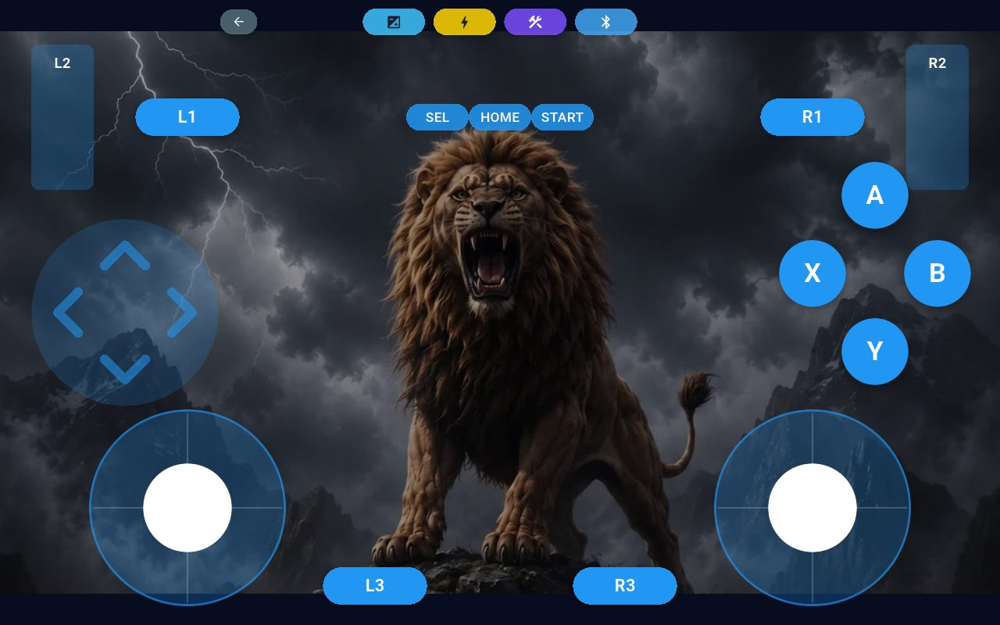
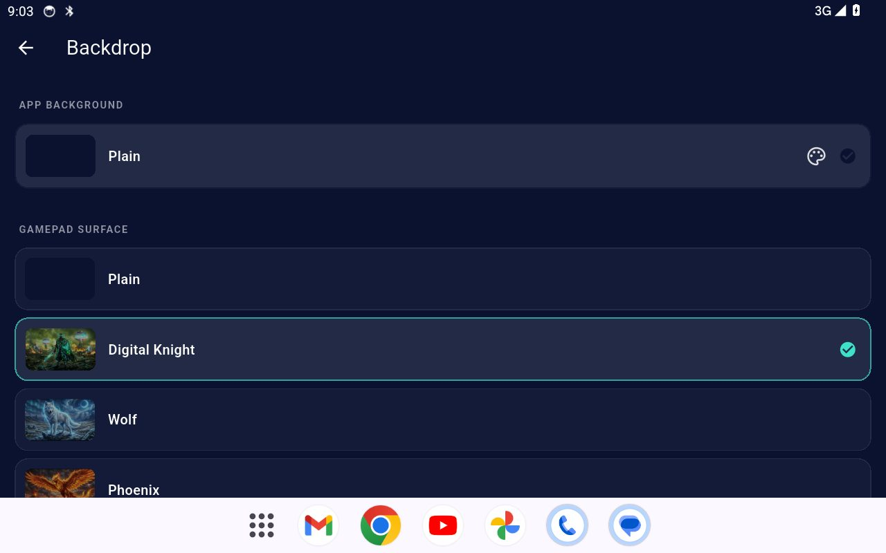

Free on Google Play — free helper for Windows & macOSGoogle Play'de ücretsiz — Windows ve macOS yardımcısı da ücretsiz
Your phone is the gamepad.Telefonun artık gamepad.
Analog sticks, triggers and haptics — on a layout you design yourself. No controller to buy, nothing else to carry.Analog çubuklar, tetikler ve titreşim — hem de kendi tasarladığın bir düzende. Kumanda almana gerek yok, taşıyacak bir şey de yok.
Android — Bluetooth, nothing to installAndroid — Bluetooth, kurulum yok
Android — or Wi-Fi, with the free Windows helperAndroid — ya da Wi-Fi, ücretsiz Windows yardımcısıyla
iPhone — Wi-Fi, with the helper on Windows or macOSiPhone — Wi-Fi, Windows ya da macOS yardımcısıyla
Two phones, three pathsİki telefon, üç yol
How V-Pad reaches your computer depends on your phone — and on whether you want to install anything over there. This is the one thing worth knowing before you start.V-Pad'in bilgisayarına nasıl ulaştığı telefonuna ve oraya bir şey kurmak isteyip istemediğine bağlı. Başlamadan önce bilinmesi gereken tek şey bu.
Android
Bluetooth
The phone presents itself as a real Bluetooth gamepad and pairs with your PC or console directly. Nothing to install on the computer — no driver, no helper. Pair it like any controller and play.Telefon kendini gerçek bir Bluetooth gamepad'i olarak tanıtır ve bilgisayarına ya da konsoluna doğrudan eşlenir. Bilgisayara hiçbir şey kurulmaz — ne sürücü ne yardımcı program. Herhangi bir kumanda gibi eşle ve oyna.
Android
Wi-Fi
The same gamepad, carried over your own Wi-Fi instead. This is the path when your PC has no Bluetooth — or when you want more than one phone in the game, up to four at once. It asks for two free installs on Windows, once: the ViGEmBus driver, then V-Pad Helper.Aynı gamepad, bu kez kendi Wi-Fi ağın üzerinden. Bilgisayarında Bluetooth yoksa — ya da oyuna birden fazla telefon sokmak istiyorsan, aynı anda dörde kadar — yol budur. Windows'ta bir kereye mahsus iki ücretsiz kurulum ister: önce ViGEmBus sürücüsü, sonra V-Pad Helper.
Apple reserves the Bluetooth gamepad role for the system, so no iPhone app can appear in your computer's Bluetooth list. Wi-Fi is the only path: a small free helper runs on your PC, and the two find each other on your own network.Apple, Bluetooth gamepad rolünü sisteme ayırmış; bu yüzden hiçbir iPhone uygulaması bilgisayarının Bluetooth listesinde görünemez. Tek yol Wi-Fi: bilgisayarında küçük ve ücretsiz bir yardımcı çalışır, ikisi kendi ağında birbirini bulur.
What is the driver for? Over Bluetooth, Windows already has the driver it needs built in. Over Wi-Fi your presses arrive as network traffic, so something has to present a controller to Windows — that is the only thing ViGEmBus does. It is made and signed by its own author, and installed once.Sürücü ne işe yarıyor? Bluetooth'ta Windows'un ihtiyaç duyduğu sürücü zaten içinde geliyor. Wi-Fi'da ise bastığın tuşlar ağ trafiği olarak ulaşır; bu yüzden Windows'a bir kumanda sunacak bir şey gerekir — ViGEmBus'ın yaptığı tek şey bu. Kendi yazarı tarafından üretilip imzalanır ve bir kez kurulur.
Why not Bluetooth on iPhone? A platform restriction, not a missing feature: iOS refuses to let third-party apps advertise the Bluetooth HID service. Every iPhone app in this category ships a desktop companion for the same reason.iPhone'da neden Bluetooth yok? Eksik bir ozellik degil, platform kisiti: iOS ucuncu taraf uygulamalarin Bluetooth HID servisini yayinlamasina izin vermiyor. Bu kategorideki butun iPhone uygulamalarinin bilgisayara bir yardimci program kurdurmasinin sebebi de ayni.
Setup on iPhone — three stepsiPhone'da kurulum — üç adım
One-time setup on the computer, then it just works.Bilgisayarda bir kerelik kurulum, sonrası kendiliğinden.
Install the helper on your PCBilgisayarına yardımcıyı kur
Download it above and run it — no installer, it lives in the system tray. Windows warns that the file is unsigned (More info → Run anyway), then asks about network access: allow it on private networks. On first run it offers a one-time gamepad driver — accept it, that is what makes games see a real controller.Yukarıdan indir ve çalıştır — kurulum sihirbazı yok, sistem tepsisinde yaşıyor. Windows dosyanın imzasız olduğunu söyleyip uyarır (Daha fazla bilgi → Yine de çalıştır), sonra ağ erişimini sorar: özel ağlar için izin ver. İlk açılışta bir kerelik gamepad sürücüsü önerir — kabul et, oyunların gerçek bir kumanda görmesini sağlayan şey o.
Same Wi-FiAynı Wi-Fi
Keep the phone and the computer on the same network. A VPN running on the computer is the usual reason the phone cannot find it.Telefon ve bilgisayar aynı ağda olsun. Telefonun bilgisayarı bulamamasının en sık sebebi, bilgisayarda açık olan bir VPN'dir.
Connect and playBağlan ve oyna
In V-Pad open Connection, allow Local Network access when iOS asks, tap your computer, then open any layout. In Steam also turn on Settings → Controller → Generic Gamepad Configuration Support.V-Pad'de Bağlantı'yı aç, iOS Yerel Ağ izni isteyince izin ver, bilgisayarına dokun ve bir düzen aç. Steam'de ayrıca Ayarlar → Kontrolcü → Genel Gamepad Yapılandırma Desteği'ni aç.
Built to be yoursSenin olacak şekilde
Move, resize and recolour every control, pick a backdrop, save your own layouts.Her kontrolü taşı, boyutlandır, rengini değiştir; arka plan seç, kendi düzenlerini kaydet.





Pro — twin sticks, full triggersPro — çift çubuk, tam tetikler

Compact — for one-handed reachCompact — tek elle erişim için

Any backdrop you likeİstediğin arka planRecoloured and rearrangedRengi ve yerleşimi değiştirilmiş

Backdrops, built inArka planlar, hazır gelir
Downloadsİndirmeler
The free helper for your computer — this is the iPhone path.Bilgisayarın için ücretsiz yardımcı — burası iPhone yolu.
Helper for Windows — for iPhoneWindows yardımcısı — iPhone için
Creates a standard XInput controller — an Xbox 360 pad, as far as games are concerned — so nothing needs special support.Standart bir XInput kumandası oluşturur — oyunlar açısından bir Xbox 360 pad'i — yani hiçbir şeyin özel desteğe ihtiyacı olmaz.
One file, no installer — the same helper the Android path uses. It is not code-signed yet, so Windows shows a blue warning the first time — choose More info, then Run anyway. It needs the ViGEmBus driver, installed once; the steps are further down this page.Tek dosya, kurulum programı yok — Android yolunun kullandığı yardımcının aynısı. Henüz imzalı olmadığı için Windows ilk seferde mavi bir uyarı gösteriyor — Ek bilgi'ye, sonra Yine de çalıştır'a dokun. Bir kez kurulan ViGEmBus sürücüsünü ister; adımlar bu sayfanın aşağısında.
Current build 1.0.2 (bd99028), 2 September 2026. New version out? Download the current vpad-host.exe and run it — Start with Windows follows the copy you ran last. ViGEmBus stays the same; only vpad-host.exe ever gets updated.Güncel sürüm 1.0.2 (bd99028), 2 Eylül 2026. Yeni sürüm mü çıktı? Güncel vpad-host.exe'yi indirip çalıştır — Windows ile başlat en son çalıştırdığın kopyayı izler. ViGEmBus hep aynı kalır; yalnızca vpad-host.exe güncellenir.
Helper for macOS — for iPhonemacOS yardımcısı — iPhone için
A signed, notarised disk image: open it and drag the app into Applications. Note that macOS gives no app a virtual gamepad, so the pad maps onto keyboard and mouse instead.İmzalı ve notarize edilmiş bir disk imajı: aç ve uygulamayı Applications'a sürükle. Şunu bil: macOS hiçbir uygulamaya sanal gamepad yolu vermiyor, o yüzden pad klavye ve fareye eşlenir.
How it reaches the computerBilgisayara nasıl ulaşır
Helper needed?Yardımcı gerekir mi?
iPhone
Wi-Fi
Yes, alwaysEvet, her zaman
Android over Wi-Fi — the new hostWi-Fi ile Android — yeni host
Two downloads, once. Then your phone is a controller every game already understands.İki indirme, bir kereye mahsus. Sonrası: telefonun, her oyunun zaten tanıdığı bir kumanda.
Install the driverSürücüyü kur
This is what lets a game believe a real controller is plugged in. It is made and signed by its own author, so Windows will not complain. Download it, double-click, answer Yes, then Next → Install → Finish. You only ever do this once: ViGEmBus is built to sit in the background — install it and leave it. You never run it, never install it again and never update it.Oyunun gerçek bir kumanda takılı sanmasını sağlayan şey bu. Kendi yazarı tarafından üretilip imzalanmıştır, Windows itiraz etmez. İndir, çift tıkla, Evet de, sonra Next → Install → Finish. Bunu ömründe bir kez yaparsın: ViGEmBus arka planda kullanılmak için tasarlandı — kur ve bırak. Çalıştırman gerekmez; bir daha kurman ya da güncellemen de gerekmez.
Double-click vpad-host.exe. Windows shows a blue warning the first time because the file is not signed yet — choose More info, then Run anyway. No black console window appears; instead you get a window with a QR code and a 6-digit number. Leave it open, your phone needs it in a moment. There is also a small V-Pad icon by the clock, bottom-right — that is the host, and it keeps running after you close the window.vpad-host.exe'ye çift tıkla. Dosya henüz imzalı olmadığı için Windows ilk seferde mavi bir uyarı gösterir — Ek bilgi, sonra Yine de çalıştır. Siyah bir komut penceresi açılmaz; onun yerine QR kod ve 6 haneli sayı taşıyan bir pencere gelir. Kapatma, birazdan telefon isteyecek. Ayrıca sağ altta, saatin yanında küçük bir V-Pad simgesi belirir — host odur ve pencereyi kapatsan da çalışmaya devam eder.
Current build 1.0.2 (bd99028), 2 September 2026. New version out? Download the current vpad-host.exe and run it — Start with Windows follows the copy you ran last. ViGEmBus stays the same; only vpad-host.exe ever gets updated.Güncel sürüm 1.0.2 (bd99028), 2 Eylül 2026. Yeni sürüm mü çıktı? Güncel vpad-host.exe'yi indirip çalıştır — Windows ile başlat en son çalıştırdığın kopyayı izler. ViGEmBus hep aynı kalır; yalnızca vpad-host.exe güncellenir.
Point the phone at itTelefonu ona yönelt
Phone and computer on the same Wi-Fi. Open V-Pad, choose Wi-Fi, and either scan that QR code or type the six digits. If Windows is blocking the way in, the host says so and offers a one-click fix from its notification-area icon — bottom-right, behind the ^ arrow.Telefon ve bilgisayar aynı Wi-Fi'de olsun. V-Pad'i aç, Wi-Fi'yi seç ve ya QR kodu tara ya da altı haneyi yaz. Windows yolu kapatıyorsa host bunu söyler ve bildirim alanındaki simgesinden tek tıkla açmayı önerir — sağ altta, ^ okunun arkasında.
The studioStüdyo
V-Pad is made by DolceFarNiente MondoV-Pad'i DolceFarNiente Mondo yapıyor
A small independent studio. We also make Kartopolis, a card game about running a city, Wavefront: Tower Defense, and a Bluetooth mouse & keyboard app for your phone.Küçük ve bağımsız bir stüdyo. Ayrıca şehir yönetme kart oyunu Kartopolis, Wavefront: Tower Defense ve telefonun için Bluetooth fare ve klavye uygulamasını yapıyoruz.